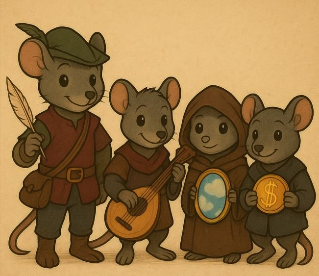

An alignment of the Guild
Neutral Good
In the Guild's tale, Neutral Good walks with The Rats of the Guild
You don't care about crowns or chains; you care about what's right. You've a knack for finding the middle path, and helping without making a spectacle. Your compassion drives you, but you won't get mired in squabbles over order or chaos. The coin you carry isn't weighted by law or rebellion, just by the weight of helping hands. That's a wonderful thing, but don't be afraid to enjoy a bit of trickery now and then.
GoodEvil
LawfulChaotic